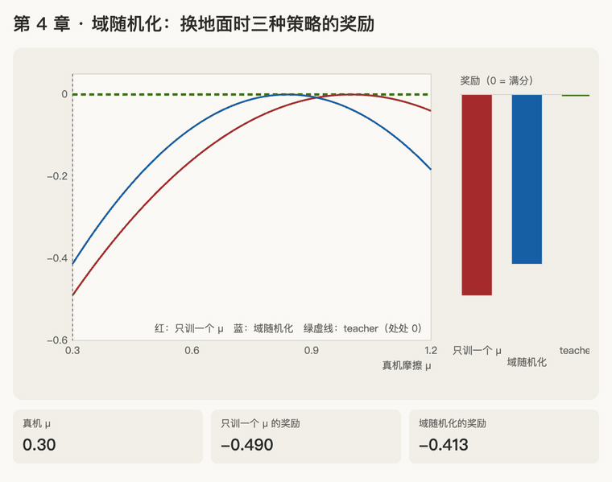

第 4 章 · 从仿真到真机：域随机化、特权信息与 teacher-student
本地运行
git clone https://github.com/wikieden/robot-motion-rl
cd robot-motion-rl/code/notebooks
pip install jupyterlab torch numpy
jupyter lab ch04_sim2real.ipynb也可以下载后直接用 VS Code 打开 .ipynb 运行。需要 GPU 的章节在 Colab 里选「代码执行程序 → 更改运行时类型 → GPU」。
本章回答：仿真里训好的策略，为什么一上真机就摔？「域随机化」是在随机什么，它的代价是什么？只在训练时能看到的信息（比如真实摩擦）怎么用上？
讲解日期：2026-11-20 · 上一章：第 3 章 PPO 运控配方 · 下一章：第 5 章 动作模仿与采样
对应原文：SuperMimic 附录 A「Sim context and domain randomization」（papers/supermimic-2610.28480.txtL711–L715，表 A.3）、§3.2（L241–L246）；ANYmal 野外地形（papers/anymal-terrain-2010.11251.txt）；RMA（papers/rma-2107.04034.txt）
本章缩写：sim2real = simulation to reality（仿真 / 到 / 真实）；DR = Domain Randomization（域 / 随机化：训练时随机改仿真参数）；μ：这里是摩擦系数（读 "mu"，和第 3 章的高斯均值不是一个东西）；ξ：仿真上下文（读 "xi"），即这一局用的随机化参数；RMA = Rapid Motor Adaptation（快速 / 运动 / 适应）；E[·]：期望（求平均）。全部缩写见 附录 · 缩写与术语表
讲解
第一步：现实差距：仿真和真机差在哪（2026-11-20）
类比：在冰场上学会的滑步，到了地毯上就不灵了。
仿真器的物理参数是人填的：摩擦、质量、质心、关节标定、电机响应、延迟……真机上这些都有误差，而且每台机器人、每块地面都不一样。策略如果只在一套参数上练，学到的是「这套参数下的最优」，换一套就可能摔。这叫 sim-to-real gap（现实差距）。
玩具例子（编的，整章都用它）：动作 a 推一个箱子，推出去的效果 = a × μ（μ 是摩擦系数），目标是效果正好等于 1，奖励 = −(a·μ − 1)²（等于 1 时得 0，最高）。
仿真里摩擦常用默认值 1.0（SuperMimic 附录 F.1 评测时脚底摩擦就取 1.0，supermimic-2610.28480.txt L961）。只在 μ = 1.0 上训，最优 a = 1/1.0 = 1.0。真机地面 μ = 0.4 时，效果 = 0.4，奖励 = −0.36。
一句话：只在一套参数上练，学到的是那套参数的最优，换个地面就不对了。
第二步：域随机化：每一局换一套参数（2026-11-20）
类比：在冰场、地毯、水泥地轮流练，不追求在某一块上最好，求哪块都过得去。
训练时每个 episode 随机抽一套参数。SuperMimic 表 A.3（原文 L711–L715 附近）：
| 随机化什么 | 分布 |
|---|---|
| 摩擦系数 | U[0.3, 1.2] |
| 关节标定偏差 | U[−0.01, 0.01] rad |
| 躯干质心偏移 | x ±0.025、y ±0.05、z ±0.05 m |
（U[a, b] 是 a 到 b 之间均匀分布。）它还特意去掉了 BeyondMimic 的「推一把」扰动，原因第 9 章再讲。
玩具例子：μ ~ U[0.3, 1.2]，最大化平均奖励 \(\mathbb E[-(a\mu-1)^2]\)。对 a 求导令其为 0：
（\(\mathbb E[\mu] = (0.3+1.2)/2 = 0.75\)，\(\mathbb E[\mu^2] = (1.2^3 - 0.3^3)/(3 \times 0.9) = 0.63\)。）
真机 μ = 0.4 时，效果 0.476，奖励 −0.274，比只训 1.0 的 −0.36 好。再看整个范围的最坏情况：
| 策略 | μ = 0.3 | μ = 1.2 | 最坏 |
|---|---|---|---|
| 只训 1.0（a = 1.0） | −0.490 | −0.040 | −0.490 |
| 域随机化（a = 1.190） | −0.413 | −0.184 | −0.413 |
DR 在 μ = 1.2 附近反而比只训 1.0 差（−0.184 对 −0.040）：它是「对所有 μ 都还行」的折中，在某个具体的 μ 上不一定最好；它买的是平均更好、最坏不太离谱。
一句话：DR 用「每处都过得去」换「某处最好」，买的是稳，不是最优。
第三步：特权信息：训练时能看、部署时看不到（2026-11-20）
类比：教练知道今天地滑，提醒你小步走；比赛时教练不在，你得自己从脚感判断。
仿真里知道真实摩擦，真机上不知道。两种用法：
| 做法 | 谁看特权信息 | 部署时 |
|---|---|---|
| 非对称 actor-critic | 只有 critic 看 | critic 只在训练时用，部署时扔掉，所以它看什么都行；更准的价值 → 更准的优势 |
| teacher-student | teacher 策略直接看 | 先训一个看得到 μ 的 teacher，再训一个只看观测历史的 student 去模仿它（ANYmal 野外地形、RMA） |
玩具例子：teacher 知道 μ = 0.4，直接给 a = 1/0.4 = 2.5，奖励 0（满分）。student 只能从「我推了多少、箱子动了多少」的历史里猜 μ，猜得越准越接近 teacher。
| 策略 | a | μ = 0.4 时的效果 | 奖励 |
|---|---|---|---|
| 只训 1.0 | 1.000 | 0.400 | −0.360 |
| 域随机化 | 1.190 | 0.476 | −0.274 |
| teacher（知道 μ） | 2.500 | 1.000 | 0 |
一句话：特权信息给 critic 用（非对称），或者先教 teacher 再让 student 从历史里猜。
第四步：SuperMimic 的做法：把随机化参数喂给 world model（2026-11-20）
SuperMimic 的策略（actor）只看带噪声的本体感知（第 2 章），这一点和别人一样。不同在它的 world model 和 critic：
- 每局的随机化参数打包成 sim context ξ（摩擦、标定偏差、质心），作为 world model 的输入（原文 L241–L246：仿真的随机性来源已知，所以模型保持确定性，把 ξ 当条件）。
- critic \(V_\psi(\hat s, g, \xi)\) 也看 ξ（附录表 A.4），就是非对称 critic。
- 传感器噪声分布也已知，所以在模型外面加（L232–L233），不让模型去学噪声。
一句话：已知的随机性（ξ、噪声）直接告诉模型，模型就不用去猜，可以是确定性的。这条在第 9 章会再用到。
动画演示：三种策略在不同地面上

可交互版：animations/04-domain-rand.html（滑块：真机摩擦 μ、训练用的单一 μ）。
怎么看：
- 横轴是真机摩擦 μ（0.3 到 1.2），三条曲线是三种策略在这个 μ 上的奖励（第一、二、三步）。
- 红线「只训一个 μ」在训练那一点（默认 1.0）满分，离开越远掉得越快；蓝线「域随机化」整体更平，最低点比红线高。
- 绿线 teacher 处处满分，它是 student 追的上限。拖「真机 μ」看三根柱子怎么变。
练习与作答记录
题 1（第一步）：只在 μ = 0.5 上训，最优 a 是多少？真机 μ = 1.0 时奖励多少？
作答：（待作答）
题 2（第二步）：如果只在 μ = 0.6 上训，算它在 μ = 0.3 和 μ = 1.2 两端的奖励，最坏情况是多少？和域随机化的最坏 −0.413 比，哪个更稳？
作答：（待作答）
题 3（第三步）：玩具例子里，student 看不到 μ，只能看自己的历史。你会用历史里的哪两个量来估计 μ？估错 10% 时，它的动作会偏多少？
作答：（待作答）
口诀
冰上学会地毯摔，只练一处只会一处；
每局换个参数练，处处过得去，买的是稳不是最优；
教练知道地滑不滑：给 critic 看，或 teacher 教 student；
已知的随机告诉模型，模型就能是确定的。
本章复习卡片
M07（域随机化：用稳换最优，玩具例子 a* = E[μ]/E[μ²]）、M08（非对称 actor-critic 与 teacher-student 的区别）
附录 · 延伸阅读
留给以后深入学习用，不影响本章主线。★ 是建议先读的。
推荐阅读
| 读什么 | 读哪里 | 读它为了什么 |
|---|---|---|
| ★ ANYmal 野外地形 | papers/anymal-terrain-2010.11251.txt |
teacher-student 的经典做法 |
| ★ RMA | papers/rma-2107.04034.txt |
student 从历史里在线估计环境参数 |
| SuperMimic 附录 A、§3.2 | papers/supermimic-2610.28480.txt L241–L246、L711–L715 |
sim context ξ 与确定性 world model |
| ANYmal 执行器网络 | papers/anymal-agile-1901.08652.txt |
用学出来的电机模型缩小现实差距 |
| ASAP | papers/asap-2502.01143.txt |
用真机数据学「动作修正量」对齐仿真和真机 |
| 运控细化笔记 §6.2 | robot-system-architecture/notes/02-motion-control-deep-dive.md |
让策略「看见」仿真里才有的信息 |
数学原理
- 求期望的最优点：\(\frac{d}{da}\mathbb E[(a\mu-1)^2] = \mathbb E[2\mu(a\mu-1)] = 0 \Rightarrow a = \mathbb E[\mu]/\mathbb E[\mu^2]\)。
- 均匀分布的矩：\(\mathbb E[\mu] = (a+b)/2\)，\(\mathbb E[\mu^2] = (b^3-a^3)/(3(b-a))\)。
公式清单
| 公式 | 意思 |
|---|---|
| \(r(a,\mu) = -(a\mu-1)^2\) | 玩具奖励 |
| \(a^*_{DR} = \mathbb E[\mu]/\mathbb E[\mu^2]\) | 域随机化的最优动作 |
| \(a^*_{teacher} = 1/\mu\) | 知道 μ 时的最优动作 |
| \(V_\psi(\hat s, g, \xi)\) | 看 sim context 的非对称 critic |
代码对照：把本章的数字用代码算一遍
用 Python + NumPy 把讲义里讲过的数算一遍，不算练习题。代码在仓库本地
robot-motion-rl/solutions/chapter-code/ch04_sim2real.py，配套测试tests/test_ch01_06.py，notebook 在notebooks/ch04_sim2real.ipynb。Mac 上直接能跑，不需要 GPU：
bash cd robot-motion-rl/solutions/chapter-code uv run python ch04_sim2real.py uv run pytest tests/test_ch01_06.py
讲义 ↔ 代码（玩具任务是编的，摩擦范围取自 SuperMimic 表 A.3，默认摩擦 1.0 取自附录 F.1）：
| 讲义 | 公式 | 写法 | 跑出来 |
|---|---|---|---|
| 第一步 只训 1.0 | a = 1/1.0 | best_action_single(1.0) |
1.000 |
| 第二步 域随机化 | E[μ]/E[μ²] | best_action_dr() |
1.190 |
| 第二步 最坏情况 | 扫 μ ∈ [0.3, 1.2] 取最小 | worst_case(a) |
−0.490、−0.413 |
| 第三步 真机 μ = 0.4 | −(aμ − 1)² | reward(a, 0.4) |
−0.360、−0.274、0 |
关键几行：
def reward(a, mu):
return -((a * mu - 1.0) ** 2) # 效果 a·μ 正好是 1 时得 0
e_mu = (lo + hi) / 2 # 均匀分布的平均
e_mu2 = (hi**3 - lo**3) / (3 * (hi - lo)) # 均匀分布的二阶矩
a_dr = e_mu / e_mu2 # 对平均奖励求导令其为 0
代码里才看得到的 1 件事：
- 玩具任务里 DR 的最优动作有解析解；真实训练里没有，PPO 是在抽到的各种参数上平均梯度，效果相同：学到一个对整个分布平均最好的策略。
自己改一改（不影响练习答案）：
- 把随机化范围缩到 U[0.6, 1.0]，看 DR 的 a 怎么变，μ = 0.4 时奖励变好还是变差。
- 用
worst_case比较几种随机化范围（U[0.3, 1.2]、U[0.5, 1.0]、U[0.2, 1.5]）训出的 DR 策略，看范围越宽最坏情况怎么变。 - 写一个 student：给它一个带噪声的 μ 估计（真值 × (1 + 0.1·噪声)），看平均奖励离 teacher 有多远。